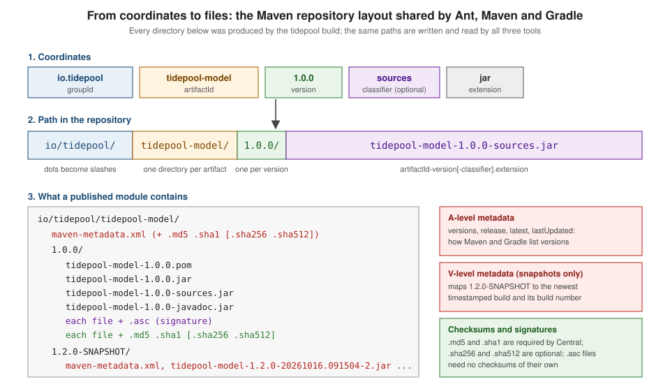

Repositories & Publishing Across Tools
|
This content was generated with the assistance of AI and should be verified against the official documentation before being relied on in production. |
This page is written against Apache Ant 1.10.18 with the Maven Artifact Resolver Ant Tasks 2.0.0 and Apache Ivy 2.6.0, Apache
Maven 3.10.0 (Maven Resolver 2) and Gradle 9.8.1. Every example was run on JDK 26 with --release 17 on 2026-10-16, apart from
the ones labelled "not run here". Maven 4 is still a release candidate (4.0.0-rc-7) and is mentioned only where it changes the
published files.
Ant, Maven and Gradle disagree about almost everything — how a build is described, when work happens, what a plugin is — but
they agree on one thing: the format of a binary repository. A JAR built by Gradle can be consumed by Ant, a POM written by
hand for an Ant build can be consumed by Maven, and an Ivy build can publish into the same directory a Maven build deploys to.
That shared format is the layout that Apache Maven defined for Maven Central, and it is the reason a library written in 2008 is
still resolvable today by a tool that did not exist then. This page describes the format, then publishes the same two tidepool
modules (tidepool-model and tidepool-engine, see the section index
for the scenario) to a local file repository, build/repo, from Ant with the Maven Resolver Ant Tasks, from Ant with Ivy, from
Maven and from Gradle, and consumes each result from the other tools.
For the model behind the coordinates see Dependency Management Fundamentals; for the signatures, checksums and verification that protect consumers see Supply Chain Security; the tool-specific pages that go deeper than this one are Maven: Install, Deploy & Distribution Management, Maven: Publishing to Maven Central, Gradle: Publishing, Ant: Maven Resolver Ant Tasks and Ant: Ivy Publishing & Multi-Project Builds.
The layout all three tools read and write
A Maven repository is a directory tree (served over HTTP, or just a directory on disk) whose paths are computed from the coordinates of an artifact. There is no index to maintain and no server logic needed: a client that knows the coordinates knows the URL. The algorithm in the Maven documentation is:
-
the
groupIdbecomes directories, one per dot-separated part (io.tidepoolbecomesio/tidepool/) -
then one directory named after the
artifactId -
then one directory named after the (base) version
-
then the file
artifactId-version.extension, orartifactId-version-classifier.extensionwhen there is a classifier

The classifier distinguishes several files of the same module (sources, javadoc, tests); the extension is usually jar
or pom. Everything else in a repository is a sibling file whose name adds a suffix to an existing file name:
| Suffix or file | Meaning |
|---|---|
|
The module descriptor: coordinates, parent, dependencies with scopes, and the metadata Maven Central requires. This is what a consuming tool reads to learn the transitive dependencies; Gradle, Ant and Ivy all read it too. |
|
Hex-encoded checksums of the file next to them. Maven Central requires both. |
|
Stronger checksums. Supported by Central but not mandatory; written by Gradle and by the Central Publisher Portal plugin,
not by |
|
A detached OpenPGP signature of the file next to it. Central requires one for every deployed file. A signature needs no checksum and a checksum needs no signature. |
|
Gradle Module Metadata (a JSON file), written by Gradle next to the POM. Gradle consumers prefer it; every other tool ignores it. |
|
Repository bookkeeping at three levels, described next. |
The metadata files
maven-metadata.xml is the only mutable file in a release repository. It exists at three levels, documented on the
Maven repository metadata page:
-
G level (in the
groupIddirectory): maps plugin prefixes to artifact IDs, and exists only for Maven plugins. It is howmvn tidepool:check-stationsfinds out whichartifactIdthe prefixtidepoolmeans. -
A level (in the
artifactIddirectory): the list of versions, withlatest,releaseandlastUpdated. It is how a tool resolves a range such as[1.0,2.0),RELEASEor Gradle’s1.+, and how a repository browser lists versions. -
V level (in a
-SNAPSHOTversion directory, snapshot repositories only): maps1.2.0-SNAPSHOTto the newest timestamped build.
After the three Maven deployments described below (versions 1.0.0 and 1.1.0, then 1.2.0-SNAPSHOT twice), the A-level file of
tidepool-model reads:
<?xml version="1.0" encoding="UTF-8"?>
<metadata>
<groupId>io.tidepool</groupId>
<artifactId>tidepool-model</artifactId>
<versioning>
<release>1.1.0</release>
<versions>
<version>1.0.0</version>
<version>1.1.0</version>
<version>1.2.0-SNAPSHOT</version>
</versions>
<lastUpdated>20261016091504</lastUpdated>
</versioning>
</metadata>release is the newest non-snapshot version, so 1.1.0 and not 1.2.0-SNAPSHOT. The second snapshot deployment, made a minute
after the first, wrote a timestamped build and updated the V-level file in 1.2.0-SNAPSHOT/ (abridged to the jar and pom
entries):
<?xml version="1.0" encoding="UTF-8"?>
<metadata modelVersion="1.1.0">
<groupId>io.tidepool</groupId>
<artifactId>tidepool-model</artifactId>
<versioning>
<lastUpdated>20261016091504</lastUpdated>
<snapshot>
<timestamp>20261016.091504</timestamp>
<buildNumber>2</buildNumber>
</snapshot>
<snapshotVersions>
<snapshotVersion>
<extension>pom</extension>
<value>1.2.0-20261016.091504-2</value>
<updated>20261016091504</updated>
</snapshotVersion>
<snapshotVersion>
<extension>jar</extension>
<value>1.2.0-20261016.091504-2</value>
<updated>20261016091504</updated>
</snapshotVersion>
<!-- … the sources and javadoc JARs and the .asc signatures follow -->
</snapshotVersions>
</versioning>
<version>1.2.0-SNAPSHOT</version>
</metadata>A remote repository never holds a file called tidepool-model-1.2.0-SNAPSHOT.jar: each deployment adds files such as
tidepool-model-1.2.0-20261016.091504-2.jar, and consumers learn which one is newest from the V-level file. The layout
documentation adds that only a locally installed snapshot uses the plain -SNAPSHOT base version in its file name; the
timestamped names are used in remote repositories, when the artifact is deployed.
Source: Maven: Maven Repository Layout and Maven: The A Level Metadata (also the V Level Metadata).
Who writes what
The same two modules published by each tool produce slightly different file sets. The listings below come from the real
build/repo directories of this page’s builds:
| File | Maven deploy |
Gradle maven-publish |
Ant Resolver tasks | Ant with Ivy |
|---|---|---|---|---|
|
yes (a copy of |
yes (generated) |
yes (a copy of |
yes (from |
parent POM deployed |
yes ( |
no (no parent) |
no (no parent) |
no (no parent) |
|
yes (with the source and Javadoc plugins) |
yes ( |
yes (declared as classified artifacts) |
sources yes, Javadoc not built here |
|
yes |
yes |
yes |
yes |
|
no |
yes |
no |
no |
|
with |
with the |
with |
not built here |
|
no |
yes |
no |
no |
|
A level, plus V level for snapshots |
A level |
A level |
none |
Two consequences follow. First, a repository published by Ivy has no maven-metadata.xml, so a consumer that has to list
versions (a range, RELEASE, Gradle’s 1.+) has nothing to read in that repository (the Ivy ibiblio resolver can list
versions from a directory instead of metadata when useMavenMetadata is false); fixed versions resolve fine, as the
consumers below show. Second, the deployed POM is not always what Maven built: the raw
copy Maven deploys keeps its parent and ${project.version} references and relies on the parent being in the same
repository, while Gradle, Ant and Ivy write flat POMs with every value resolved. Maven 4 (release candidate) changes this by
publishing a separate consumer POM; see
Maven 4: POM Model & Consumer POM.
Checksums and signatures in practice
A checksum detects accidental corruption; a signature proves who published the file. Both are plain files next to the artifact, and both can be checked by hand. On the Maven-published JAR:
cd build/repo/io/tidepool/tidepool-model/1.0.0
cat tidepool-model-1.0.0.jar.sha1
shasum -a 1 tidepool-model-1.0.0.jar
gpg --verify tidepool-model-1.0.0.jar.asc tidepool-model-1.0.0.jare8a8ce283dc8e5344cbff7f85c63a1daf2769546
e8a8ce283dc8e5344cbff7f85c63a1daf2769546 tidepool-model-1.0.0.jar
gpg: Signature made Fri Oct 16 11:12:29 2026 CEST
gpg: using EDDSA key 35B3E2EB8D77E61B4347515F2B79206E5B78A033
gpg: Good signature from "Tidepool Demo (throwaway) <demo@example.invalid>" [ultimate]The key is a throwaway generated in a scratch directory for these runs; it signs nothing real. To generate one without touching your own keyring, give GnuPG a separate home directory and a passphrase taken from the environment:
export GNUPGHOME="$HOME/tpgpg"
mkdir -m 700 "$GNUPGHOME"
gpg --batch --pinentry-mode loopback --passphrase "$SIGNING_PASSWORD" \
--quick-gen-key "Tidepool Demo (throwaway) <demo@example.invalid>" ed25519 sign 1dGNUPGHOME has to be a short path. Under the long scratch path used for these runs, gpg-agent could not create its socket
and key generation failed with gpg: can't connect to the agent: File name too long. Never commit a passphrase or a secret key; the builds
below read the passphrase from SIGNING_PASSWORD (and Gradle the key from SIGNING_KEY) in the environment. How the
consumer decides to trust a signature or a checksum is the subject of
Supply Chain Security.
Maven Central and the Central Publisher Portal
Maven Central is the default repository of all three tools (https://repo.maven.apache.org/maven2/, also served as
repo1.maven.org). Ant with Ivy’s ibiblio resolver, Ant with the Resolver tasks (central is the only default repository),
Maven (the central repository of the super POM) and Gradle (mavenCentral()) all read it with the layout above. What changed
recently is the write side.
The end of OSSRH
For many years open source projects published to Maven Central by deploying with the Maven Deploy Plugin (or Gradle’s
maven-publish) to the Sonatype OSSRH staging service, then releasing the staging repository by hand. OSSRH reached end of
life on 2025-06-30 and was shut down; every OSSRH namespace was migrated to the Central Publisher Portal
(central.sonatype.com), and the same username and password can be used to log in. The Gradle documentation states the
consequence directly: Maven Central no longer supports the legacy deployment protocol used by the Maven Deploy Plugin, so
publishing to Central requires a dedicated plugin or a bundle upload. Books and blog posts that show <repository> entries
pointing at oss.sonatype.org or s01.oss.sonatype.org describe a service that no longer exists.
The Portal accepts a release in three ways:
-
The Maven plugin.
org.sonatype.central:central-publishing-maven-plugin(0.12.0 at the time of writing) is added with<extensions>true</extensions>;mvn deploythen builds a bundle and uploads it. -
A bundle upload. A ZIP (or
tar.gz, up to 1 GB, possibly holding several components) laid out exactly like the repository above, uploaded by hand in the Portal or with the Portal Publisher API. -
Community Gradle plugins. There is no official Gradle plugin for the Portal. Sonatype lists JReleaser and a number of third-party plugins, and also offers an OSSRH Staging API compatibility service that lets an unchanged
maven-publishconfiguration keep working after the tokens and the URL are replaced.
Ant has no plugin, so an Ant build produces the bundle itself, which the next section does.
Namespace, metadata and files Central requires
Before the first upload you register a namespace in the Portal, which is a groupId prefix you must prove you control. For a
domain you own the proof is a DNS TXT record on the reversed domain (control example.com and you may publish com.example.*);
for GitHub-hosted projects the Portal can verify io.github.<user> automatically. A namespace is registered once and then covers
every module published under it; io.tidepool is a made-up namespace here, so nothing on this page can be published.
Central validates every deployment against these rules:
-
Coordinates: a release version (never ending in
-SNAPSHOT), and agroupIdinside a verified namespace. -
POM metadata:
name,description,url, at least onelicense, at least onedeveloper, and anscmsection withconnection,developerConnectionandurl(the URL need not be public). The POM of the tidepool modules carries all of them. -
Sources and Javadoc: a
-sources.jarand a-javadoc.jarfor every JAR (placeholder JARs are accepted for projects with nothing to document). -
Checksums:
.md5and.sha1for every file;.sha256and.sha512are accepted. -
Signatures: an
.ascfor every file, including the POM.
The Maven plugin generates the checksums, but it does not create the Javadoc or sources JARs, the signatures, or the POM metadata. Snapshots are separate: they are accepted only for namespaces where snapshots were explicitly enabled, without validation, and are cleaned up after a period (currently 90 days).
Building a bundle from any tool’s repository
The repository that Ant’s Resolver tasks wrote above already has the structure Central expects: for every file an .asc,
.md5 and .sha1. A bundle is therefore a ZIP of the io/ tree; the maven-metadata.xml files are left out, because the example tree in the
Central documentation has none and the Maven plugin deletes its own staging metadata before it zips:
cd build/repo
zip -qr ../../tidepool-1.0.0-bundle.zip io -x '*/maven-metadata.xml*'
unzip -Z1 ../../tidepool-1.0.0-bundle.zip | grep -v '/$' | grep tidepool-modelio/tidepool/tidepool-model/1.0.0/tidepool-model-1.0.0-javadoc.jar
io/tidepool/tidepool-model/1.0.0/tidepool-model-1.0.0-sources.jar
io/tidepool/tidepool-model/1.0.0/tidepool-model-1.0.0-javadoc.jar.asc
io/tidepool/tidepool-model/1.0.0/tidepool-model-1.0.0-javadoc.jar.md5
io/tidepool/tidepool-model/1.0.0/tidepool-model-1.0.0.pom.sha1
io/tidepool/tidepool-model/1.0.0/tidepool-model-1.0.0-javadoc.jar.sha1
io/tidepool/tidepool-model/1.0.0/tidepool-model-1.0.0.jar.md5
io/tidepool/tidepool-model/1.0.0/tidepool-model-1.0.0-sources.jar.sha1
io/tidepool/tidepool-model/1.0.0/tidepool-model-1.0.0.pom
io/tidepool/tidepool-model/1.0.0/tidepool-model-1.0.0-sources.jar.md5
io/tidepool/tidepool-model/1.0.0/tidepool-model-1.0.0-sources.jar.asc
io/tidepool/tidepool-model/1.0.0/tidepool-model-1.0.0.jar.asc
io/tidepool/tidepool-model/1.0.0/tidepool-model-1.0.0.pom.md5
io/tidepool/tidepool-model/1.0.0/tidepool-model-1.0.0.jar
io/tidepool/tidepool-model/1.0.0/tidepool-model-1.0.0.jar.sha1
io/tidepool/tidepool-model/1.0.0/tidepool-model-1.0.0.pom.ascThe upload itself is a single authenticated request to the Portal Publisher API. It is not run here: it needs a verified namespace and a user token, and the namespace used on this page does not exist. The call has this shape, with the token read from the environment (generate one on the Portal’s account page; never commit it):
curl --request POST \
--header "Authorization: Bearer ${CENTRAL_TOKEN}" \
--form bundle=@tidepool-1.0.0-bundle.zip \
"https://central.sonatype.com/api/v1/publisher/upload?name=tidepool-1.0.0&publishingType=USER_MANAGED"CENTRAL_TOKEN stands for the base64 encoding of the user token’s username:password pair, which is the value the API expects
after Bearer. publishingType is AUTOMATIC (validate, then publish if valid) or USER_MANAGED, the default (validate, then wait
for a manual release in the Portal). The Maven plugin does exactly this for you from mvn deploy; its configuration and its output are covered, again
as "not run here", in Maven: Publishing to Maven Central.
Where each tool keeps what it downloads
Publishing is the rare half of repository work; the common half is consuming, and every tool keeps a local copy of what it resolves. The three caches are different on purpose, and none of them is a repository you should publish by copying files.
| Tool | Cache and default location | Layout and origin tracking |
|---|---|---|
Maven and the Resolver Ant Tasks |
The local repository, |
The same layout as a remote repository. Resolver adds |
Gradle |
The dependency cache, |
Not a repository: files live under |
Ivy |
The cache, |
One directory per |
The listings below show the real contents for the tidepool consumers of this page. Maven’s local repository after resolving
tidepool-engine from a repository named tidepool:
io/tidepool/tidepool-engine/1.0.0/_remote.repositories
io/tidepool/tidepool-engine/1.0.0/tidepool-engine-1.0.0.jar
io/tidepool/tidepool-engine/1.0.0/tidepool-engine-1.0.0.jar.sha1
io/tidepool/tidepool-engine/1.0.0/tidepool-engine-1.0.0.pom
io/tidepool/tidepool-engine/1.0.0/tidepool-engine-1.0.0.pom.sha1#NOTE: This is a Maven Resolver internal implementation file, its format can be changed without prior notice.
#Fri Oct 16 11:20:12 CEST 2026
tidepool-engine-1.0.0.jar>tidepool-d6bc14ce29278accc5e8de3329d6391aca5966a2=
tidepool-engine-1.0.0.pom>tidepool-d6bc14ce29278accc5e8de3329d6391aca5966a2=The Gradle cache after resolving the same module over HTTP (the <sha1> directories are shown as a placeholder):
files-2.1/io.tidepool/tidepool-engine/1.0.0/<sha1>/tidepool-engine-1.0.0.jar
files-2.1/io.tidepool/tidepool-engine/1.0.0/<sha1>/tidepool-engine-1.0.0.pom
files-2.1/io.tidepool/tidepool-model/1.0.0/<sha1>/tidepool-model-1.0.0.jar
files-2.1/io.tidepool/tidepool-model/1.0.0/<sha1>/tidepool-model-1.0.0.pom
files-2.1/io.tidepool/tidepool-parent/1.0.0/<sha1>/tidepool-parent-1.0.0.pomAnd the Ivy cache of the Ivy build (the tidepool-model entry was resolved from the file repository, the others from Central):
commons-io/commons-io/ivy-2.20.0.xml
commons-io/commons-io/ivy-2.20.0.xml.original
commons-io/commons-io/ivydata-2.20.0.properties
commons-io/commons-io/jars/commons-io-2.20.0.jar
io.tidepool/tidepool-model/ivy-1.0.0.xml
io.tidepool/tidepool-model/ivy-1.0.0.xml.original
io.tidepool/tidepool-model/ivydata-1.0.0.properties
io.tidepool/tidepool-model/jars/tidepool-model-1.0.0.jar
org.apache.commons/commons-csv/ivy-1.14.1.xml
org.apache.commons/commons-csv/ivydata-1.14.1.properties
org.apache.commons/commons-csv/jars/commons-csv-1.14.1.jarWhy Gradle does not share ~/.m2
Gradle’s cache is not a Maven repository, and Gradle does not read ~/.m2 unless you ask it to with mavenLocal(). According to
the Gradle documentation every entry in the metadata cache records the repository that provided it and a timestamp for
expiry, there is a separate metadata cache per repository, the files are stored under their checksum without a separate file
store per repository, and file-based locking lets several Gradle processes use the cache concurrently. Those guarantees depend
on Gradle being the only writer, which a directory shared with Maven, Ant and arbitrary scripts cannot promise. The Gradle
documentation also says that for a local Maven or Ivy repository Gradle bypasses its dependency cache entirely, because nothing
guarantees the content stays unchanged between runs, and recommends such repositories only for prototyping.
You can see this on this page’s runs. The Gradle consumer resolved tidepool-engine from build/repo as a plain file: URL
and the cache directory files-2.1/io.tidepool was never created; the same consumer pointed at the same files served by a
local HTTP server created the five entries listed above.
mavenLocal() pitfalls
mavenLocal() adds the Maven local repository as a Gradle repository. It is tempting because mvn install and
publishToMavenLocal put things there, and it is the classic cause of builds that pass on one machine and fail on another:
-
It is a file repository, so it bypasses the Gradle cache and its verification (see above).
-
It is whatever happens to be installed on this machine. A teammate or a CI agent that never ran
mvn installhas nothing there; and a stale snapshot or a half-finished experiment can silently win over the published release. -
It is searched in declaration order. Placed before
mavenCentral(), it answers for every group, so a corrupted or hand-installed copy of an unrelated library wins, with no signature or checksum comparison. -
It makes builds hard to reproduce: the result depends on files that are not part of the build.
The following run shows both sides with the tidepool consumer. Without mavenLocal() the artifact installed by Maven is
invisible to Gradle (Maven Central does not contain io.tidepool):
FAILURE: Build failed with an exception.
* What went wrong:
Execution failed for task ':compileJava'.
> Could not resolve all files for configuration ':compileClasspath'.
> Could not find io.tidepool:tidepool-engine:1.0.0.
Searched in the following locations:
- https://repo.maven.apache.org/maven2/io/tidepool/tidepool-engine/1.0.0/tidepool-engine-1.0.0.pom
Required by:
root project 'tidepool-consumer'With mavenLocal() declared and the Maven local repository pointed at the directory that holds the install
(-Dmaven.repo.local=…, which Gradle honours, as it does the localRepository setting of settings.xml), the same build prints the
three station lines. If you must use it, restrict it to the groups you install locally with a content filter, as the next
page section shows, and never depend on it in CI. Publishing into ~/.m2 needs no mavenLocal() in the
publishing.repositories block: the Maven Publish Plugin creates a publishToMavenLocal task for that.
Repository managers
A repository manager is a server that stores and serves binary components. Maven’s own best-practice page calls using one an essential practice for any significant use of Maven, and the arguments apply unchanged to Ant and Gradle builds. Three repository kinds exist in every product:
-
A proxy repository caches a remote repository (usually Maven Central). The first request for a file downloads it from Central; later requests, from any developer or CI agent, are served from the manager. Builds get faster, keep working when Central is unreachable, and every consumed component is recorded in one place.
-
A hosted repository holds what your organisation publishes: releases (immutable) and snapshots (overwritable), usually in two separate repositories.
-
A group repository merges several proxy and hosted repositories behind one URL, so that every build needs a single repository entry.
The products the Maven documentation lists include open source and commercial servers; the best known are Sonatype Nexus Repository, JFrog Artifactory (an open source edition exists, free but not open source) and Reposilite (open source). Apache Archiva, which older tutorials and the Maven 2 book use, was retired: the project moved to the Apache Attic in 2024 (retired February 2024, move completed May 2024) and receives no more releases, so choose one of the others. The concepts the old books teach — proxy, hosted and group repositories, mirrors, deployment accounts — are exactly the ones above.
All three build tools point at the manager the same way, as the only repository for everything:
-
Maven: a
<mirror>insettings.xmlwith<mirrorOf>*</mirrorOf>redirects every repository, including Central and the repositories declared in POMs, to the group URL. -
Gradle: one
maven { url = … }repository independencyResolutionManagementinsettings.gradle(.kts), withRepositoriesMode.FAIL_ON_PROJECT_REPOSso that no build script can add another, or an init script that does the same for every project on the machine. -
Ant: a
remoterepo(plus an optionalmirror) in the Resolver tasks, or anibiblioresolver withrootin the Ivy settings.
The Maven mirror is the smallest example. It is not run here: it needs a repository manager, and the group URL below is a
placeholder for a Nexus, Artifactory or Reposilite instance that answers on localhost.
<settings>
<mirrors>
<mirror>
<id>company-group</id>
<mirrorOf>*</mirrorOf>
<url>http://localhost:8081/repository/maven-public/</url>
</mirror>
</mirrors>
<servers>
<server>
<id>company-group</id>
<username>${env.REPO_USER}</username>
<password>${env.REPO_PASSWORD}</password>
</server>
</servers>
</settings>The <server> entry is matched to the mirror by id; credentials come from environment variables or from the encrypted
passwords described in
Maven: settings.xml & Password Encryption,
and settings.xml itself must never be committed. Maven 3.10.0 additionally scopes credentials to the origin of a repository,
so a password configured for one host is not offered to another. The full mirror, repository-order and proxy rules are in
Maven: Repositories, Mirrors & Repository Managers;
for Gradle see Gradle: Repositories & Content Filtering.
What a client enforces about the transport
Two checks happen before any byte of an artifact is read, and both produce error messages that readers meet in practice.
Both runs below use a tiny stand-in for a repository server: python3 -m http.server 8089 --bind 127.0.0.1 started inside
build/repo, which serves the files read-only over plain HTTP.
Maven blocks plain HTTP for repositories other than localhost. Since Maven 3.8.1 a built-in mirror named
maven-default-http-blocker refuses http:// repositories (a defence against man-in-the-middle attacks on dependency
downloads). Asking for the tidepool modules at an HTTP host that is not local fails before any request is made:
[ERROR] Failed to execute goal on project tidepool-consumer: Could not collect dependencies for project io.tidepool.demo:tidepool-consumer:jar:1.0.0
[ERROR] Failed to read artifact descriptor for io.tidepool:tidepool-engine:jar:1.0.0
[ERROR] Caused by: The following artifacts could not be resolved: io.tidepool:tidepool-engine:pom:1.0.0 (absent): Could not transfer artifact io.tidepool:tidepool-engine:pom:1.0.0 from/to maven-default-http-blocker (http://0.0.0.0/): Blocked mirror for repositories: [tidepool (http://repo.example.org/releases, default, releases)]The same repository at http://localhost:8089 works, and the server log shows what Maven asks for: each file and its .sha1.
127.0.0.1 - - [16/Oct/2026 11:20:12] "GET /io/tidepool/tidepool-engine/1.0.0/tidepool-engine-1.0.0.pom HTTP/1.1" 200 -
127.0.0.1 - - [16/Oct/2026 11:20:12] "GET /io/tidepool/tidepool-engine/1.0.0/tidepool-engine-1.0.0.pom.sha1 HTTP/1.1" 200 -
127.0.0.1 - - [16/Oct/2026 11:20:12] "GET /io/tidepool/tidepool-parent/1.0.0/tidepool-parent-1.0.0.pom HTTP/1.1" 200 -Gradle refuses plain HTTP unless you opt in. The same HTTP URL in a Gradle repository fails with:
> Could not resolve all dependencies for configuration ':compileClasspath'.
> Using insecure protocols with repositories, without explicit opt-in, is unsupported.
* Try:
> Switch Maven repository 'tidepool(http://localhost:8089)' to redirect to a secure protocol (like HTTPS) or allow insecure protocols.The consumer builds below turn isAllowInsecureProtocol (allowInsecureProtocol in Groovy) on only when the URL scheme is
http, which is acceptable for localhost and for nothing else. Ant’s Resolver tasks support only file:, http: and https:
remote repositories.
Maven Central filters by prefix. Central publishes a list of the namespaces it contains, and Maven Resolver’s remote repository
filtering uses it so that a request for a path that cannot exist there is never sent. The failure message of the checksum test
below includes the line prefixes: Path io/tidepool/tidepool-model/1.0.0/tidepool-model-1.0.0.jar NOT allowed from central, which
is Resolver deciding that io/tidepool is not a Central namespace and therefore not asking Central about it. This keeps internal
coordinates from leaking to a public server. Filtering other repositories is configuration (a prefix file or a groupId filter in
${localRepo}/.remoteRepositoryFilters) and Maven’s own documentation cautions against limiting what Central may serve.
Publishing tidepool to build/repo
The two modules are published to build/repo four ways. All four publish io.tidepool:tidepool-model:1.0.0 and
io.tidepool:tidepool-engine:1.0.0, where the engine depends on the model and on Apache Commons CSV 1.14.1, so each published POM
has to say so. No example publishes anywhere else.
Maven: mvn deploy
Maven’s coordinates, dependencies and repository come from one file, so publishing is a lifecycle phase. The parent POM holds
the metadata Central needs, the distributionManagement repository (a file: URL under the project directory) and a sign
profile that attaches the maven-gpg-plugin; the Source and Javadoc plugins run in every build. This runs on Maven 3.10.0
with the plugin versions pinned (see
Maven: Plugins & Their Configuration for why).
<project xmlns="http://maven.apache.org/POM/4.0.0"
xmlns:xsi="http://www.w3.org/2001/XMLSchema-instance"
xsi:schemaLocation="http://maven.apache.org/POM/4.0.0 https://maven.apache.org/xsd/maven-4.0.0.xsd">
<modelVersion>4.0.0</modelVersion>
<groupId>io.tidepool</groupId>
<artifactId>tidepool-parent</artifactId>
<version>1.0.0</version>
<packaging>pom</packaging>
<name>tidepool</name>
<description>Predicts tide heights for coastal stations from harmonic constituents.</description>
<url>https://tidepool.example.org</url>
<licenses>
<license>
<name>Apache License, Version 2.0</name>
<url>https://www.apache.org/licenses/LICENSE-2.0.txt</url>
<distribution>repo</distribution>
</license>
</licenses>
<developers>
<developer>
<name>Tidepool Maintainers</name>
<email>maintainers@tidepool.example.org</email>
<organization>Tidepool</organization>
<organizationUrl>https://tidepool.example.org</organizationUrl>
</developer>
</developers>
<scm>
<connection>scm:git:https://git.example.org/tidepool.git</connection>
<developerConnection>scm:git:ssh://git.example.org/tidepool.git</developerConnection>
<url>https://git.example.org/tidepool</url>
</scm>
<modules>
<module>tidepool-model</module>
<module>tidepool-engine</module>
</modules>
<properties>
<maven.compiler.release>17</maven.compiler.release>
<project.build.sourceEncoding>UTF-8</project.build.sourceEncoding>
<project.build.outputTimestamp>2026-10-16T00:00:00Z</project.build.outputTimestamp>
</properties>
<distributionManagement>
<repository>
<id>local-file</id>
<url>file://${maven.multiModuleProjectDirectory}/build/repo</url>
</repository>
<snapshotRepository>
<id>local-file</id>
<url>file://${maven.multiModuleProjectDirectory}/build/repo</url>
</snapshotRepository>
</distributionManagement>
<build>
<pluginManagement>
<plugins>
<plugin>
<groupId>org.apache.maven.plugins</groupId>
<artifactId>maven-compiler-plugin</artifactId>
<version>3.16.0</version>
</plugin>
<plugin>
<groupId>org.apache.maven.plugins</groupId>
<artifactId>maven-jar-plugin</artifactId>
<version>3.5.1</version>
</plugin>
<plugin>
<groupId>org.apache.maven.plugins</groupId>
<artifactId>maven-resources-plugin</artifactId>
<version>3.5.0</version>
</plugin>
<plugin>
<groupId>org.apache.maven.plugins</groupId>
<artifactId>maven-install-plugin</artifactId>
<version>3.2.0</version>
</plugin>
<plugin>
<groupId>org.apache.maven.plugins</groupId>
<artifactId>maven-deploy-plugin</artifactId>
<version>3.2.0</version>
</plugin>
<plugin>
<groupId>org.apache.maven.plugins</groupId>
<artifactId>maven-surefire-plugin</artifactId>
<version>3.6.0</version>
</plugin>
<plugin>
<groupId>org.apache.maven.plugins</groupId>
<artifactId>maven-source-plugin</artifactId>
<version>3.4.0</version>
</plugin>
<plugin>
<groupId>org.apache.maven.plugins</groupId>
<artifactId>maven-javadoc-plugin</artifactId>
<version>3.12.0</version>
</plugin>
<plugin>
<groupId>org.apache.maven.plugins</groupId>
<artifactId>maven-gpg-plugin</artifactId>
<version>3.2.8</version>
</plugin>
</plugins>
</pluginManagement>
<plugins>
<plugin>
<groupId>org.apache.maven.plugins</groupId>
<artifactId>maven-source-plugin</artifactId>
<executions>
<execution>
<id>attach-sources</id>
<goals>
<goal>jar-no-fork</goal>
</goals>
</execution>
</executions>
</plugin>
<plugin>
<groupId>org.apache.maven.plugins</groupId>
<artifactId>maven-javadoc-plugin</artifactId>
<executions>
<execution>
<id>attach-javadocs</id>
<goals>
<goal>jar</goal>
</goals>
</execution>
</executions>
</plugin>
</plugins>
</build>
<profiles>
<profile>
<id>sign</id>
<build>
<plugins>
<plugin>
<groupId>org.apache.maven.plugins</groupId>
<artifactId>maven-gpg-plugin</artifactId>
<executions>
<execution>
<id>sign-artifacts</id>
<phase>verify</phase>
<goals>
<goal>sign</goal>
</goals>
</execution>
</executions>
</plugin>
</plugins>
</build>
</profile>
</profiles>
</project>Each module’s POM names the parent and its own dependencies. The engine’s is:
<project xmlns="http://maven.apache.org/POM/4.0.0"
xmlns:xsi="http://www.w3.org/2001/XMLSchema-instance"
xsi:schemaLocation="http://maven.apache.org/POM/4.0.0 https://maven.apache.org/xsd/maven-4.0.0.xsd">
<modelVersion>4.0.0</modelVersion>
<parent>
<groupId>io.tidepool</groupId>
<artifactId>tidepool-parent</artifactId>
<version>1.0.0</version>
</parent>
<artifactId>tidepool-engine</artifactId>
<name>tidepool-engine</name>
<description>Reads stations from CSV and predicts tide heights.</description>
<dependencies>
<dependency>
<groupId>io.tidepool</groupId>
<artifactId>tidepool-model</artifactId>
<version>${project.version}</version>
</dependency>
<dependency>
<groupId>org.apache.commons</groupId>
<artifactId>commons-csv</artifactId>
<version>1.14.1</version>
</dependency>
</dependencies>
</project>The file URL uses ${maven.multiModuleProjectDirectory}, which is the directory holding the .mvn folder, so the project
needs an (empty) .mvn directory. The commands below pass -Dmaven.repo.local=local-m2 only to keep this demonstration out
of the real ~/.m2; they also install into it, which is why a deploy leaves the artifacts in the local repository too. The
signing key and passphrase come from GNUPGHOME, SIGNING_PASSWORD and the gpg plugin’s MAVEN_GPG_PASSPHRASE variable:
export GNUPGHOME="$HOME/tpgpg" MAVEN_GPG_PASSPHRASE="$SIGNING_PASSWORD"
mvn -Dmaven.repo.local=local-m2 --batch-mode -Psign -Dgpg.keyname=<key id> deploy[INFO] Reactor Build Order:
[INFO] tidepool [pom]
[INFO] tidepool-model [jar]
[INFO] tidepool-engine [jar]
…
[INFO] --- source:3.4.0:jar-no-fork (attach-sources) @ tidepool-model ---
[INFO] Building jar: …/tidepool-model/target/tidepool-model-1.0.0-sources.jar
[INFO] --- javadoc:3.12.0:jar (attach-javadocs) @ tidepool-model ---
[INFO] Building jar: …/tidepool-model/target/tidepool-model-1.0.0-javadoc.jar
[INFO] --- gpg:3.2.8:sign (sign-artifacts) @ tidepool-model ---
[INFO] --- install:3.2.0:install (default-install) @ tidepool-model ---
[INFO] --- deploy:3.2.0:deploy (default-deploy) @ tidepool-model ---
[INFO] Uploaded to local-file: file://…/build/repo/io/tidepool/tidepool-model/1.0.0/tidepool-model-1.0.0.pom (589 B at 589 kB/s)
[INFO] Uploaded to local-file: file://…/build/repo/io/tidepool/tidepool-model/1.0.0/tidepool-model-1.0.0.jar (5.3 kB at 2.6 MB/s)
…
[INFO] Downloading from local-file: file://…/build/repo/io/tidepool/tidepool-model/maven-metadata.xml
[INFO] Uploaded to local-file: file://…/build/repo/io/tidepool/tidepool-model/maven-metadata.xml (305 B)
…
[INFO] Reactor Summary for tidepool 1.0.0:
[INFO] tidepool ........................................... SUCCESS [ 6.039 s]
[INFO] tidepool-model ..................................... SUCCESS [ 4.503 s]
[INFO] tidepool-engine .................................... SUCCESS [ 1.300 s]
[INFO] BUILD SUCCESSThe order of the lifecycle explains the order of the work: the signing plugin is bound to verify, so it signs after the JARs
exist and before install and deploy copy them. Deploy then reads the existing A-level metadata from the target repository
(the "Downloading … maven-metadata.xml" line), merges the new version into it, and writes it back with fresh checksums. The
parent POM is deployed too, because the engine’s POM refers to it. Versions 1.1.0 and 1.2.0-SNAPSHOT were produced by changing
the version in all three POMs with the Versions Maven Plugin and deploying again:
mvn -Dmaven.repo.local=local-m2 --batch-mode org.codehaus.mojo:versions-maven-plugin:2.23.0:set \
-DnewVersion=1.1.0 -DgenerateBackupPoms=false
mvn -Dmaven.repo.local=local-m2 --batch-mode -Psign -Dgpg.keyname=<key id> deploySnapshots go to the same directory because snapshotRepository points at it; production setups use two repositories, so that
releases can be immutable while snapshots are overwritten freely. Hosted release repositories are normally configured to reject redeployment of an existing version (a setting of the
repository manager), and Maven Central never modifies or removes a published component, which is why a published version is
never fixed in place — a corrected build gets the next version.
Gradle: maven-publish
In Gradle publishing is an extension (publishing) configured in each module, plus the signing plugin. withSourcesJar() and
withJavadocJar() add the extra JARs to the java component; from(components["java"]) publishes the main JAR together with
them, and the pom block fills in the metadata Central requires. Gradle generates the POM and the .module file and fills in the
checksums. Both modules are configured the same way; the model is shown first, then the lines that differ in the engine.
plugins {
`java-library`
`maven-publish`
signing
}
group = "io.tidepool"
version = "1.0.0"
description = "Station, constituent and height value types."
java {
withSourcesJar()
withJavadocJar()
}
tasks.withType<JavaCompile>().configureEach {
options.release = 17
}
publishing {
publications {
create<MavenPublication>("maven") {
from(components["java"])
pom {
name = "tidepool-model"
description = project.description
url = "https://tidepool.example.org"
licenses {
license {
name = "Apache License, Version 2.0"
url = "https://www.apache.org/licenses/LICENSE-2.0.txt"
}
}
developers {
developer {
name = "Tidepool Maintainers"
email = "maintainers@tidepool.example.org"
organization = "Tidepool"
organizationUrl = "https://tidepool.example.org"
}
}
scm {
connection = "scm:git:https://git.example.org/tidepool.git"
developerConnection = "scm:git:ssh://git.example.org/tidepool.git"
url = "https://git.example.org/tidepool"
}
}
}
}
repositories {
maven {
name = "localFile"
url = uri(rootProject.layout.buildDirectory.dir("repo"))
}
}
}
signing {
val signingKey: String? = providers.environmentVariable("SIGNING_KEY").orNull
val signingPassword: String? = providers.environmentVariable("SIGNING_PASSWORD").orNull
isRequired = signingKey != null
useInMemoryPgpKeys(signingKey, signingPassword)
sign(publishing.publications["maven"])
}plugins {
id 'java-library'
id 'maven-publish'
id 'signing'
}
group = 'io.tidepool'
version = '1.0.0'
description = 'Station, constituent and height value types.'
java {
withSourcesJar()
withJavadocJar()
}
tasks.withType(JavaCompile).configureEach {
options.release = 17
}
publishing {
publications {
maven(MavenPublication) {
from components.java
pom {
name = 'tidepool-model'
description = project.description
url = 'https://tidepool.example.org'
licenses {
license {
name = 'Apache License, Version 2.0'
url = 'https://www.apache.org/licenses/LICENSE-2.0.txt'
}
}
developers {
developer {
name = 'Tidepool Maintainers'
email = 'maintainers@tidepool.example.org'
organization = 'Tidepool'
organizationUrl = 'https://tidepool.example.org'
}
}
scm {
connection = 'scm:git:https://git.example.org/tidepool.git'
developerConnection = 'scm:git:ssh://git.example.org/tidepool.git'
url = 'https://git.example.org/tidepool'
}
}
}
}
repositories {
maven {
name = 'localFile'
url = rootProject.layout.buildDirectory.dir('repo')
}
}
}
signing {
def signingKey = providers.environmentVariable('SIGNING_KEY').orNull
def signingPassword = providers.environmentVariable('SIGNING_PASSWORD').orNull
required = signingKey != null
useInMemoryPgpKeys(signingKey, signingPassword)
sign publishing.publications.maven
}The engine’s build file is the same with tidepool-engine as the name and description, and a dependencies block before
group:
dependencies {
api(project(":tidepool-model"))
implementation("org.apache.commons:commons-csv:1.14.1")
}dependencies {
api project(':tidepool-model')
implementation 'org.apache.commons:commons-csv:1.14.1'
}rootProject.name = "tidepool"
dependencyResolutionManagement {
repositories {
mavenCentral()
}
}
include("tidepool-model", "tidepool-engine")The key and passphrase come from the environment: SIGNING_KEY holds the ASCII-armoured secret key as a single value (a CI
secret) and SIGNING_PASSWORD its passphrase; with no key the build still publishes, unsigned, because isRequired is false.
export SIGNING_KEY="$(cat throwaway-key.asc)" SIGNING_PASSWORD=…
gradle --console=plain publish> Task :tidepool-engine:compileJava
> Task :tidepool-engine:jar
> Task :tidepool-engine:javadocJar
> Task :tidepool-engine:sourcesJar
> Task :tidepool-engine:generateMetadataFileForMavenPublication
> Task :tidepool-engine:generatePomFileForMavenPublication
> Task :tidepool-engine:signMavenPublication
> Task :tidepool-engine:publishMavenPublicationToLocalFileRepository
> Task :tidepool-engine:publish
> Task :tidepool-model:signMavenPublication
> Task :tidepool-model:publishMavenPublicationToLocalFileRepository
> Task :tidepool-model:publish
BUILD SUCCESSFUL in 8sThe task names follow publish<Publication>PublicationTo<Repository>Repository, so an extra repository named staging would add
publishMavenPublicationToStagingRepository. Running the Groovy DSL version of the same build produced an identical file tree
and a byte-identical engine POM. The generated engine POM shows how Gradle maps configurations to Maven scopes:
<dependencies>
<dependency>
<groupId>io.tidepool</groupId>
<artifactId>tidepool-model</artifactId>
<version>1.0.0</version>
<scope>compile</scope>
</dependency>
<dependency>
<groupId>org.apache.commons</groupId>
<artifactId>commons-csv</artifactId>
<version>1.14.1</version>
<scope>runtime</scope>
</dependency>
</dependencies>api became compile scope and implementation became runtime: a consumer compiles against the model but not against
Commons CSV, which is exactly the encapsulation the Java Library plugin promises. That encapsulation is lost for any consumer that
reads only the POM and treats a scope it has not seen as compile, and it is why the Ant consumer below can compile against
the Gradle-published engine without Commons CSV on its compile classpath but not against Maven’s, where the same dependency was
declared without a scope and so is compile. The generated POM also starts with a comment containing the marker do_not_remove: published-with-gradle-metadata, which tells
Gradle consumers to read the .module file next to it instead; that file carries the full variant information (the
apiElements and runtimeElements variants with their attributes and file checksums).
Ant with the Maven Resolver Ant Tasks
Ant has no coordinates, no dependency model and no publication lifecycle: you write the steps. The Maven Artifact Resolver Ant
Tasks (2.0.0) borrow Maven’s: a resolver:pom element reads a POM, resolver:deploy uploads the artifacts you list under the
coordinates in it, and resolver:resolve builds classpaths from dependencies. The uber JAR (about 4.9 MB, downloaded from
Maven Central and checked against its published .sha1) goes in the project’s lib directory and is loaded with a taskdef on
the antlib URI antlib:org.apache.maven.resolver.ant.
Each module needs a plain pom.xml because Ant has nowhere else to hold the metadata. They duplicate the licenses,
developers and scm blocks of the Maven parent, since Ant has no inheritance; the engine’s declares the model dependency and,
as the Gradle build does, puts Commons CSV in runtime scope:
<project xmlns="http://maven.apache.org/POM/4.0.0"
xmlns:xsi="http://www.w3.org/2001/XMLSchema-instance"
xsi:schemaLocation="http://maven.apache.org/POM/4.0.0 https://maven.apache.org/xsd/maven-4.0.0.xsd">
<modelVersion>4.0.0</modelVersion>
<groupId>io.tidepool</groupId>
<artifactId>tidepool-engine</artifactId>
<version>1.0.0</version>
<name>tidepool-engine</name>
<description>Reads stations from CSV and predicts tide heights.</description>
<url>https://tidepool.example.org</url>
<licenses>
<license>
<name>Apache License, Version 2.0</name>
<url>https://www.apache.org/licenses/LICENSE-2.0.txt</url>
</license>
</licenses>
<developers>
<developer>
<name>Tidepool Maintainers</name>
<email>maintainers@tidepool.example.org</email>
<organization>Tidepool</organization>
<organizationUrl>https://tidepool.example.org</organizationUrl>
</developer>
</developers>
<scm>
<connection>scm:git:https://git.example.org/tidepool.git</connection>
<developerConnection>scm:git:ssh://git.example.org/tidepool.git</developerConnection>
<url>https://git.example.org/tidepool</url>
</scm>
<dependencies>
<dependency>
<groupId>io.tidepool</groupId>
<artifactId>tidepool-model</artifactId>
<version>1.0.0</version>
</dependency>
<dependency>
<groupId>org.apache.commons</groupId>
<artifactId>commons-csv</artifactId>
<version>1.14.1</version>
<scope>runtime</scope>
</dependency>
</dependencies>
</project>The build file is one macro that compiles, packages, signs and deploys a module, called twice. The signing step runs the gpg
command-line tool (Ant has no signing task); the passphrase is fed on standard input from the SIGNING_PASSWORD environment
variable. resolver:deploy takes a POM (which fixes the coordinates and which is also uploaded), a list of artifacts to attach
(classifier for the sources and Javadoc JARs, type="jar.asc" and type="pom.asc" for the signatures, which makes them files
with those extensions) and a remote repository:
<?xml version="1.0" encoding="UTF-8"?>
<project name="tidepool" default="deploy" basedir="."
xmlns:resolver="antlib:org.apache.maven.resolver.ant">
<property name="version" value="1.0.0"/>
<property name="local.repo" location="${basedir}/.m2-local"/>
<property name="deploy.repo" location="${basedir}/build/repo"/>
<property name="gpg.keyname" value=""/>
<property environment="env"/>
<taskdef uri="antlib:org.apache.maven.resolver.ant"
resource="org/apache/maven/resolver/ant/antlib.xml"
classpath="lib/maven-resolver-ant-tasks-2.0.0-uber.jar"/>
<!-- Where Maven Resolver keeps its cache, and which repositories it may read and write. -->
<resolver:localrepo dir="${local.repo}"/>
<resolver:remoterepo id="tidepool-file" url="file:${deploy.repo}"/>
<path id="empty.cp"/>
<!-- Builds, packages, signs and deploys one module; the module's pom.xml supplies the coordinates. -->
<macrodef name="publish-module">
<attribute name="name"/>
<attribute name="classpathref" default="empty.cp"/>
<sequential>
<local name="out"/>
<property name="out" location="build/@{name}"/>
<mkdir dir="${out}/classes"/>
<javac srcdir="@{name}/src/main/java" destdir="${out}/classes" release="17"
includeantruntime="false" classpathref="@{classpathref}"/>
<jar destfile="${out}/@{name}-${version}.jar" basedir="${out}/classes"/>
<jar destfile="${out}/@{name}-${version}-sources.jar" basedir="@{name}/src/main/java"/>
<javadoc sourcepath="@{name}/src/main/java" destdir="${out}/apidocs" classpathref="@{classpathref}"
failonerror="true" additionalparam="-Xdoclint:none" access="protected">
<package name="io.tidepool.*"/>
</javadoc>
<jar destfile="${out}/@{name}-${version}-javadoc.jar" basedir="${out}/apidocs"/>
<!-- Signatures: one detached .asc per file, produced by the gpg command line. -->
<apply executable="gpg" failonerror="true" parallel="false" dir="${out}"
inputstring="${env.SIGNING_PASSWORD}">
<arg line="--batch --yes --pinentry-mode loopback --passphrase-fd 0 --local-user ${gpg.keyname} --armor --detach-sign"/>
<srcfile/>
<fileset dir="${out}" includes="*.jar"/>
</apply>
<copy file="@{name}/pom.xml" tofile="${out}/@{name}-${version}.pom"/>
<exec executable="gpg" failonerror="true" inputstring="${env.SIGNING_PASSWORD}">
<arg line="--batch --yes --pinentry-mode loopback --passphrase-fd 0 --local-user ${gpg.keyname} --armor --detach-sign ${out}/@{name}-${version}.pom"/>
</exec>
<resolver:pom file="@{name}/pom.xml" id="pom.@{name}"/>
<resolver:deploy>
<pom refid="pom.@{name}"/>
<artifacts>
<artifact file="${out}/@{name}-${version}.jar"/>
<artifact file="${out}/@{name}-${version}-sources.jar" classifier="sources"/>
<artifact file="${out}/@{name}-${version}-javadoc.jar" classifier="javadoc"/>
<artifact file="${out}/@{name}-${version}.jar.asc" type="jar.asc"/>
<artifact file="${out}/@{name}-${version}-sources.jar.asc" type="jar.asc" classifier="sources"/>
<artifact file="${out}/@{name}-${version}-javadoc.jar.asc" type="jar.asc" classifier="javadoc"/>
<artifact file="${out}/@{name}-${version}.pom.asc" type="pom.asc"/>
</artifacts>
<remoterepo refid="tidepool-file"/>
</resolver:deploy>
</sequential>
</macrodef>
<target name="deploy" description="Build and deploy both modules to build/repo">
<publish-module name="tidepool-model"/>
<resolver:resolve>
<dependencies>
<dependency coords="org.apache.commons:commons-csv:1.14.1"/>
</dependencies>
<path refid="csv.cp" classpath="compile"/>
</resolver:resolve>
<path id="engine.cp">
<pathelement location="build/tidepool-model/classes"/>
<path refid="csv.cp"/>
</path>
<publish-module name="tidepool-engine" classpathref="engine.cp"/>
</target>
</project>export GNUPGHOME="$HOME/tpgpg" SIGNING_PASSWORD=…
ant -Dgpg.keyname=<key id>Buildfile: …/build.xml
deploy:
[javac] Compiling 4 source files to …/build/tidepool-model/classes
[jar] Building jar: …/build/tidepool-model/tidepool-model-1.0.0.jar
[jar] Building jar: …/build/tidepool-model/tidepool-model-1.0.0-sources.jar
[jar] Building jar: …/build/tidepool-model/tidepool-model-1.0.0-javadoc.jar
[resolver:deploy] Uploaded to tidepool-file file:…/build/repo/io/tidepool/tidepool-model/1.0.0/tidepool-model-1.0.0.pom (2 KB at 400.7 KB/sec)
[resolver:deploy] Uploaded to tidepool-file file:…/build/repo/io/tidepool/tidepool-model/1.0.0/tidepool-model-1.0.0.jar (4 KB at 1816.4 KB/sec)
…
[resolver:deploy] Downloading from tidepool-file file:…/build/repo/io/tidepool/tidepool-model/maven-metadata.xml
[resolver:deploy] Uploaded to tidepool-file file:…/build/repo/io/tidepool/tidepool-model/maven-metadata.xml (305 B at 297.9 KB/sec)
[javac] Compiling 2 source files to …/build/tidepool-engine/classes
…
BUILD SUCCESSFUL
Total time: 3 secondsThe resulting tree equals the one Maven wrote, file for file, except that there is no parent POM: Resolver does exactly what
deploy:deploy does (the same library underneath), including reading and updating maven-metadata.xml and writing .md5 and
.sha1 for each file. The resolver:resolve call also demonstrates the consuming side: it resolved Commons CSV and its two
dependencies from Maven Central into the localrepo directory, so .m2-local ended up with the same layout as ~/.m2/repository.
There is also a resolver:install task that installs the produced artifacts into the local repository instead of deploying them to a
remote one (not run here).
Ant with Ivy
Ivy comes from the other direction: its model is the module descriptor (ivy.xml) with configurations, and the Maven
layout is merely one of the repository shapes it can write. Publishing to a Maven layout therefore needs three decisions the
Resolver tasks make for you: a resolver that writes in the Maven layout, a POM generated from the descriptor, and a
publication list that includes the POM.
<ivysettings>
<property name="repo.dir" value="${ivy.settings.dir}/build/repo" override="false"/>
<settings defaultResolver="all"/>
<caches defaultCacheDir="${ivy.settings.dir}/.ivy2/cache"/>
<resolvers>
<!-- Write side: the Maven 2 layout, built from the Ivy module coordinates. -->
<filesystem name="tidepool-publish" m2compatible="true">
<artifact pattern="${repo.dir}/[organisation]/[module]/[revision]/[artifact]-[revision](-[classifier]).[ext]"/>
</filesystem>
<!-- Read side: the same directory read through POMs, then Maven Central. -->
<chain name="all">
<ibiblio name="tidepool-file" root="file://${repo.dir}" m2compatible="true"/>
<ibiblio name="central" m2compatible="true"/>
</chain>
</resolvers>
</ivysettings>The filesystem resolver supports publishing; the ibiblio resolver does not ("Handle publish: no" in the resolver
reference), which is why the settings define two. m2compatible="true" converts the dots of the organisation into slashes, so
[organisation] expands to io/tidepool, and the (-[classifier]) part of the pattern is how the sources classifier ends
up in a file name. The module descriptor lists what to publish. The m:classifier attribute comes from the
http://ant.apache.org/ivy/maven namespace:
<ivy-module version="2.0" xmlns:m="http://ant.apache.org/ivy/maven">
<info organisation="io.tidepool" module="tidepool-engine" revision="1.0.0" status="release">
<license name="Apache License, Version 2.0" url="https://www.apache.org/licenses/LICENSE-2.0.txt"/>
<description homepage="https://tidepool.example.org">Reads stations from CSV and predicts tide heights.</description>
</info>
<configurations>
<conf name="compile"/>
<conf name="runtime" extends="compile"/>
</configurations>
<publications>
<artifact name="tidepool-engine" type="jar" ext="jar" conf="compile"/>
<artifact name="tidepool-engine" type="source" ext="jar" m:classifier="sources" conf="compile"/>
<artifact name="tidepool-engine" type="pom" ext="pom" conf="compile"/>
</publications>
<dependencies>
<dependency org="io.tidepool" name="tidepool-model" rev="1.0.0" conf="compile->default"/>
<dependency org="org.apache.commons" name="commons-csv" rev="1.14.1" conf="compile->default"/>
</dependencies>
</ivy-module>The model’s descriptor is the same without the dependencies block. ivy:makepom turns the descriptor into a POM, but its
default template has no licenses, developers or SCM section, so a template file supplies those (Ivy fills in the ${ivy.pom.*}
properties):
<?xml version="1.0" encoding="UTF-8"?>
<project xmlns="http://maven.apache.org/POM/4.0.0"
xmlns:xsi="http://www.w3.org/2001/XMLSchema-instance"
xsi:schemaLocation="http://maven.apache.org/POM/4.0.0 https://maven.apache.org/xsd/maven-4.0.0.xsd">
<modelVersion>4.0.0</modelVersion>
<groupId>${ivy.pom.groupId}</groupId>
<artifactId>${ivy.pom.artifactId}</artifactId>
<packaging>${ivy.pom.packaging}</packaging>
<version>${ivy.pom.version}</version>
<name>${ivy.pom.artifactId}</name>
<description>${ivy.pom.description}</description>
<url>${ivy.pom.url}</url>
<licenses>
<license>
<name>Apache License, Version 2.0</name>
<url>https://www.apache.org/licenses/LICENSE-2.0.txt</url>
</license>
</licenses>
<developers>
<developer>
<name>Tidepool Maintainers</name>
<email>maintainers@tidepool.example.org</email>
<organization>Tidepool</organization>
<organizationUrl>https://tidepool.example.org</organizationUrl>
</developer>
</developers>
<scm>
<connection>scm:git:https://git.example.org/tidepool.git</connection>
<developerConnection>scm:git:ssh://git.example.org/tidepool.git</developerConnection>
<url>https://git.example.org/tidepool</url>
</scm>
</project><?xml version="1.0" encoding="UTF-8"?>
<project name="tidepool-ivy" default="publish" basedir="."
xmlns:ivy="antlib:org.apache.ivy.ant">
<taskdef resource="org/apache/ivy/ant/antlib.xml" uri="antlib:org.apache.ivy.ant"
classpath="lib/ivy-2.6.0.jar"/>
<ivy:settings file="ivysettings.xml"/>
<macrodef name="publish-module">
<attribute name="name"/>
<sequential>
<local name="out"/>
<property name="out" location="build/@{name}"/>
<ivy:resolve file="@{name}/ivy.xml" conf="*"/>
<ivy:cachepath pathid="@{name}.cp" conf="compile" file="@{name}/ivy.xml"/>
<mkdir dir="${out}/classes"/>
<javac srcdir="@{name}/src/main/java" destdir="${out}/classes" release="17"
includeantruntime="false" classpathref="@{name}.cp"/>
<jar destfile="${out}/@{name}-1.0.0.jar" basedir="${out}/classes"/>
<jar destfile="${out}/@{name}-1.0.0-sources.jar" basedir="@{name}/src/main/java"/>
<ivy:makepom ivyfile="@{name}/ivy.xml" pomfile="${out}/@{name}-1.0.0.pom"
templatefile="pom-template.xml" printIvyInfo="false">
<mapping conf="compile" scope="compile"/>
<mapping conf="runtime" scope="runtime"/>
</ivy:makepom>
<ivy:publish resolver="tidepool-publish" pubrevision="1.0.0" status="release"
overwrite="true" publishivy="false" conf="*"
artifactspattern="${out}/[artifact]-[revision](-[classifier]).[ext]"/>
</sequential>
</macrodef>
<target name="publish" description="Build both modules and publish them to build/repo">
<publish-module name="tidepool-model"/>
<publish-module name="tidepool-engine"/>
</target>
</project>publishivy="false" stops Ivy from also writing ivy-1.0.0.xml next to the POM, since a Maven-layout repository holds POMs,
not Ivy files. The engine is built against the just-published model: ivy:resolve finds
io.tidepool#tidepool-model;1.0.0 through the ibiblio resolver reading build/repo, which proves the published POM is
readable. The output of ant:
Buildfile: …/build.xml
publish:
[ivy:resolve] :: Apache Ivy 2.6.0 - 20260712075753 :: https://ant.apache.org/ivy/ ::
[ivy:resolve] :: loading settings :: file = …/ivysettings.xml
[ivy:resolve] :: resolving dependencies :: io.tidepool#tidepool-model;1.0.0
…
[ivy:publish] :: publishing :: io.tidepool#tidepool-model
[ivy:publish] published tidepool-model to …/build/repo/io/tidepool/tidepool-model/1.0.0/tidepool-model-1.0.0.jar
[ivy:publish] published tidepool-model to …/build/repo/io/tidepool/tidepool-model/1.0.0/tidepool-model-1.0.0-sources.jar
[ivy:publish] published tidepool-model to …/build/repo/io/tidepool/tidepool-model/1.0.0/tidepool-model-1.0.0.pom
[ivy:resolve] :: resolving dependencies :: io.tidepool#tidepool-engine;1.0.0
[ivy:resolve] found io.tidepool#tidepool-model;1.0.0 in tidepool-file
[ivy:resolve] found org.apache.commons#commons-csv;1.14.1 in central
[ivy:resolve] found commons-io#commons-io;2.20.0 in central
[ivy:resolve] found commons-codec#commons-codec;1.19.0 in central
…
BUILD SUCCESSFUL
Total time: 2 secondsThe repository Ivy wrote has the three artifacts per module, plus .md5 and .sha1, but, as the table above shows, no
maven-metadata.xml and no .asc files: signing and metadata are your job. Two details of the ivy:resolve step cost
time while developing this page. First, the dependency mapping compile->compile found the model module but no artifacts in it,
because a module read from a POM exposes its JAR in the default configuration, not in compile; compile->default is the
mapping that works. Second, the Commons CSV dependency had to be in the compile configuration for javac to see it, which is
why the POM ivy:makepom wrote lists it with compile scope, unlike the Gradle and Resolver publications.
Source: Ivy: publish, Ivy: makepom, Ivy: filesystem resolver and Ivy: ibiblio resolver.
Consuming each repository from the other tools
All three tools can be pointed at build/repo. The consumer below is a small project named tidepool-consumer with one class,
io.tidepool.consumer.Report, that reads data/stations.csv through tidepool-engine and prints a predicted tide height per
station. It exercises the engine (so its own dependencies on the model and on Commons CSV must resolve), and it is identical in
all three consumers:
package io.tidepool.consumer;
import io.tidepool.engine.StationReader;
import io.tidepool.engine.TideEngine;
import io.tidepool.model.Station;
import java.io.IOException;
import java.nio.file.Files;
import java.nio.file.Path;
import java.time.Instant;
import java.util.Locale;
public final class Report {
public static void main(String[] args) throws IOException {
try (var reader = Files.newBufferedReader(Path.of(args[0]))) {
for (Station s : StationReader.read(reader)) {
System.out.printf(Locale.ROOT, "%s: %.3f m%n", s.name(), TideEngine.predict(s, Instant.parse("2026-01-01T00:00:00Z")).metres());
}
}
}
}Report is this page’s own lab code, written for these runs rather than taken from any tool’s documentation.
Maven consumer
Maven reads a repository declared in <repositories> of the POM (or in a profile of settings.xml). The URL is a property so
the same POM can be pointed at each tool’s output from the command line. checksumPolicy is warn by default; here it is set to fail,
so a corrupt file stops the build instead of printing a warning, and snapshots are disabled for the repository because it
holds releases only. The Exec Maven Plugin runs the program.
<project xmlns="http://maven.apache.org/POM/4.0.0"
xmlns:xsi="http://www.w3.org/2001/XMLSchema-instance"
xsi:schemaLocation="http://maven.apache.org/POM/4.0.0 https://maven.apache.org/xsd/maven-4.0.0.xsd">
<modelVersion>4.0.0</modelVersion>
<groupId>io.tidepool.demo</groupId>
<artifactId>tidepool-consumer</artifactId>
<version>1.0.0</version>
<properties>
<maven.compiler.release>17</maven.compiler.release>
<project.build.sourceEncoding>UTF-8</project.build.sourceEncoding>
<!-- Overridden on the command line: -Dtidepool.repo=file:///path/to/build/repo -->
<tidepool.repo>file://${project.basedir}/../maven/build/repo</tidepool.repo>
</properties>
<repositories>
<repository>
<id>tidepool</id>
<url>${tidepool.repo}</url>
<releases>
<checksumPolicy>fail</checksumPolicy>
</releases>
<snapshots>
<enabled>false</enabled>
</snapshots>
</repository>
</repositories>
<dependencies>
<dependency>
<groupId>io.tidepool</groupId>
<artifactId>tidepool-engine</artifactId>
<version>1.0.0</version>
</dependency>
</dependencies>
<build>
<plugins>
<plugin>
<groupId>org.apache.maven.plugins</groupId>
<artifactId>maven-compiler-plugin</artifactId>
<version>3.16.0</version>
</plugin>
<plugin>
<groupId>org.apache.maven.plugins</groupId>
<artifactId>maven-resources-plugin</artifactId>
<version>3.5.0</version>
</plugin>
<plugin>
<groupId>org.apache.maven.plugins</groupId>
<artifactId>maven-jar-plugin</artifactId>
<version>3.5.1</version>
</plugin>
<plugin>
<groupId>org.apache.maven.plugins</groupId>
<artifactId>maven-dependency-plugin</artifactId>
<version>3.11.0</version>
</plugin>
<plugin>
<groupId>org.codehaus.mojo</groupId>
<artifactId>exec-maven-plugin</artifactId>
<version>3.6.4</version>
<configuration>
<mainClass>io.tidepool.consumer.Report</mainClass>
<arguments>
<argument>data/stations.csv</argument>
</arguments>
</configuration>
</plugin>
</plugins>
</build>
</project>mvn -Dmaven.repo.local=consumer-m2 --batch-mode -Dtidepool.repo=file:///…/gradle/build/repo compile exec:java dependency:treeSan Francisco: -0.869 m
Boston: -0.662 m
Honolulu: -0.112 m
[INFO] io.tidepool.demo:tidepool-consumer:jar:1.0.0
[INFO] \- io.tidepool:tidepool-engine:jar:1.0.0:compile
[INFO] +- io.tidepool:tidepool-model:jar:1.0.0:compile
[INFO] \- org.apache.commons:commons-csv:jar:1.14.1:runtime
[INFO] +- commons-io:commons-io:jar:2.20.0:runtime
[INFO] \- commons-codec:commons-codec:jar:1.19.0:runtimePointing the same command at the Maven, Ant-with-Resolver and Ant-with-Ivy repositories printed the same three station lines.
Only the dependency tree differs, and it is the scope the publisher chose that differs: from the Maven and Ivy repositories
Commons CSV is compile, from the Gradle and Resolver repositories it is runtime (and so is everything it brings in). While the
third-party files were requested, the log also showed Maven asking the file repository tidepool for artifacts it does not hold
(commons-csv-1.14.1.pom, commons-codec-1.19.0.jar) before falling back to Central: a repository declared in a POM is
consulted for every artifact, in declaration order, unless the build filters it. The coordinates of the consumed module also appear in
the consumer’s local repository with the origin recorded in _remote.repositories, as shown above.
Two failures worth knowing, produced on purpose. A corrupt checksum with checksumPolicy fail (the .sha1 file of the model
JAR in a copy of the repository was replaced with zeros):
[WARNING] Checksum validation failed, expected '0000000000000000000000000000000000000000' (REMOTE_EXTERNAL) but is actually 'e8a8ce283dc8e5344cbff7f85c63a1daf2769546' from tidepool for file://…/bad-repo/io/tidepool/tidepool-model/1.0.0/tidepool-model-1.0.0.jar
[ERROR] BUILD FAILURE
[ERROR] Failed to execute goal on project tidepool-consumer: Could not resolve dependencies for project io.tidepool.demo:tidepool-consumer:jar:1.0.0
[ERROR] dependency: io.tidepool:tidepool-model:jar:1.0.0 (compile)
[ERROR] prefixes: Path io/tidepool/tidepool-model/1.0.0/tidepool-model-1.0.0.jar NOT allowed from central
[ERROR] Could not transfer artifact io.tidepool:tidepool-model:jar:1.0.0 from/to tidepool (file://…/bad-repo): Checksum validation failed, expected '0000000000000000000000000000000000000000' (REMOTE_EXTERNAL) but is actually 'e8a8ce283dc8e5344cbff7f85c63a1daf2769546'and a repository that does not exist:
[ERROR] Failed to execute goal on project tidepool-consumer: Could not resolve dependencies for project io.tidepool.demo:tidepool-consumer:jar:1.0.0
[ERROR] dependency: io.tidepool:tidepool-engine:jar:1.0.0 (compile)
[ERROR] Could not find artifact io.tidepool:tidepool-engine:jar:1.0.0 in tidepool (file://…/nope)
[ERROR] prefixes: Path io/tidepool/tidepool-engine/1.0.0/tidepool-engine-1.0.0.jar NOT allowed from centralThe second failure leaves tidepool-engine-1.0.0.jar.lastUpdated and tidepool-engine-1.0.0.pom.lastUpdated files in the local
repository: Maven remembers the failed lookup and does not retry until the update interval of the repository has passed (daily by default) or
you run with -U. Delete the directory, or use -U, after fixing a repository URL.
Gradle consumer
A Gradle build declares repositories in the settings file (the recommended place), so that every project in the build shares them
and RepositoriesMode.FAIL_ON_PROJECT_REPOS can forbid a build script from adding more. exclusiveContent declares that the io.tidepool group
is found in the tidepool repository and in no other, so Central is never asked about it (using exclusive content filters is a
Gradle best practice, and it keeps internal coordinates from leaking to public servers).
rootProject.name = "tidepool-consumer"
dependencyResolutionManagement {
repositoriesMode = RepositoriesMode.FAIL_ON_PROJECT_REPOS
repositories {
exclusiveContent {
forRepository {
maven {
name = "tidepool"
// Overridden with -PtidepoolRepo=/path/to/build/repo
url = uri(providers.gradleProperty("tidepoolRepo").getOrElse("../maven/build/repo"))
// A plain-HTTP repository is refused unless you opt in; only do this for localhost.
isAllowInsecureProtocol = url.scheme == "http"
}
}
filter {
includeGroup("io.tidepool")
}
}
mavenCentral()
}
}rootProject.name = 'tidepool-consumer'
dependencyResolutionManagement {
repositoriesMode = RepositoriesMode.FAIL_ON_PROJECT_REPOS
repositories {
exclusiveContent {
forRepository {
maven {
name = 'tidepool'
// Overridden with -PtidepoolRepo=/path/to/build/repo
url = providers.gradleProperty('tidepoolRepo').getOrElse('../maven/build/repo')
// A plain-HTTP repository is refused unless you opt in; only do this for localhost.
allowInsecureProtocol = url.scheme == 'http'
}
}
filter {
includeGroup 'io.tidepool'
}
}
mavenCentral()
}
}plugins {
application
}
dependencies {
implementation("io.tidepool:tidepool-engine:1.0.0")
}
tasks.withType<JavaCompile>().configureEach {
options.release = 17
}
application {
mainClass = "io.tidepool.consumer.Report"
}
tasks.named<JavaExec>("run") {
args("data/stations.csv")
}plugins {
id 'application'
}
dependencies {
implementation 'io.tidepool:tidepool-engine:1.0.0'
}
tasks.withType(JavaCompile).configureEach {
options.release = 17
}
application {
mainClass = 'io.tidepool.consumer.Report'
}
tasks.named('run') {
args 'data/stations.csv'
}gradle --console=plain -q -PtidepoolRepo=/…/maven/build/repo run dependencies --configuration runtimeClasspathSan Francisco: -0.869 m
Boston: -0.662 m
Honolulu: -0.112 m
------------------------------------------------------------
Root project 'tidepool-consumer'
------------------------------------------------------------
runtimeClasspath - Runtime classpath of source set 'main'.
\--- io.tidepool:tidepool-engine:1.0.0
+--- io.tidepool:tidepool-model:1.0.0
\--- org.apache.commons:commons-csv:1.14.1
+--- commons-io:commons-io:2.20.0
\--- commons-codec:commons-codec:1.19.0The Gradle and Groovy builds printed the same lines, and the consumer also worked against the Gradle-, Resolver- and
Ivy-published repositories. Reading a Maven-published module there is no .module file, so Gradle builds the module’s variants from the POM. In this run Gradle did not complain about the corrupt .sha1 of the bad-repository copy when it read it as a file:
repository, which is consistent with the cache bypass described above; checksums of files fetched over HTTP are compared with the
server’s, and the stricter checks are dependency verification (the subject of
Gradle: Dependency Locking, Verification & Caching).
Ant consumer
The Resolver tasks make Ant a consumer of any Maven-layout repository: list the repositories under the id resolver.repositories
(the default is Central only, so declaring it replaces the default), declare the dependency by coordinates, and get a path per
scope. A classpath asked for with classpath="compile" holds the compile-time dependencies and one asked for with
classpath="runtime" the runtime ones. The <echo> shows the compile classpath, so the effect of the publisher’s scopes is
visible:
<?xml version="1.0" encoding="UTF-8"?>
<project name="tidepool-consumer" default="run" basedir="."
xmlns:resolver="antlib:org.apache.maven.resolver.ant">
<!-- Overridden with -Dtidepool.repo=/path/to/build/repo -->
<property name="tidepool.repo" location="${basedir}/../maven/build/repo"/>
<property name="local.repo" location="${basedir}/.m2-local"/>
<taskdef uri="antlib:org.apache.maven.resolver.ant"
resource="org/apache/maven/resolver/ant/antlib.xml"
classpath="lib/maven-resolver-ant-tasks-2.0.0-uber.jar"/>
<resolver:localrepo dir="${local.repo}"/>
<!-- Declared repositories are searched in this order: the file repository first, then Central. -->
<resolver:remoterepos id="resolver.repositories">
<resolver:remoterepo id="tidepool" url="file:${tidepool.repo}" snapshots="false"/>
<resolver:remoterepo id="central" url="https://repo.maven.apache.org/maven2" snapshots="false"/>
</resolver:remoterepos>
<target name="resolve">
<resolver:resolve>
<dependencies>
<dependency coords="io.tidepool:tidepool-engine:1.0.0"/>
</dependencies>
<path refid="compile.cp" classpath="compile"/>
<path refid="runtime.cp" classpath="runtime"/>
</resolver:resolve>
<echo>compile classpath: ${toString:compile.cp}</echo>
</target>
<target name="run" depends="resolve">
<mkdir dir="build/classes"/>
<javac srcdir="src" destdir="build/classes" release="17" includeantruntime="false" classpathref="compile.cp"/>
<java classname="io.tidepool.consumer.Report" fork="true">
<classpath>
<pathelement location="build/classes"/>
<path refid="runtime.cp"/>
</classpath>
<arg value="data/stations.csv"/>
</java>
</target>
</project>ant -Dtidepool.repo=/…/gradle/build/repoBuildfile: …/build.xml
resolve:
[resolver:resolve] Resolving artifacts
[echo] compile classpath: …/.m2-local/io/tidepool/tidepool-engine/1.0.0/tidepool-engine-1.0.0.jar:…/.m2-local/io/tidepool/tidepool-model/1.0.0/tidepool-model-1.0.0.jar
run:
[mkdir] Created dir: …/build/classes
[javac] Compiling 1 source file to …/build/classes
[java] San Francisco: -0.869 m
[java] Boston: -0.662 m
[java] Honolulu: -0.112 m
BUILD SUCCESSFULWith the Ant-published repository the compile classpath is the same two JARs, because that POM also puts Commons CSV in runtime
scope; from the Maven-published repository it has five JARs (the engine, the model, Commons CSV, Commons IO and Commons Codec),
because there Commons CSV is a compile dependency. Which is "right" is a decision the publisher made when writing the POM;
the consumer cannot override it except with an explicit dependency or an exclusion. The Ant consumer also resolved the
repository published by Ivy.
Who can read whom
Every cell of this matrix was run and printed the three station lines:
| Consumer \ repository published by | Maven | Gradle | Ant (Resolver) | Ant (Ivy) |
|---|---|---|---|---|
Maven ( |
yes |
yes |
yes |
yes |
Gradle ( |
yes |
yes |
yes |
yes |
Ant (Resolver tasks) |
yes |
yes |
yes |
yes |
Ivy as a consumer was exercised only against its own repository: the engine build above resolved the just-published model
through an ibiblio resolver reading build/repo. Resolving from the other three repositories with Ivy was not run here.
Common mistakes
-
Overwriting a release. A release version is a promise: Maven Central does not modify or remove published components, and a hosted release repository is normally set to refuse redeployment. If a published build was wrong, publish the next version. Snapshots exist for the opposite case.
-
Releasing a snapshot dependency. A release whose POM depends on a
-SNAPSHOTcan no longer be reproduced, and Central rejects it for the same reason it rejects a snapshot version. -
Forgetting the files Central wants. A build that passes locally can fail validation because sources, Javadoc, one signature, a
scmsection or a licence is missing; check the bundle’s file list (above) against the Central requirements before the upload. -
Unpinned plugin versions. Maven warns
'build.plugins.plugin.version' for … is missing; for publishing it matters because a plugin that changes how it writes metadata or checksums changes what you ship. -
Assuming
~/.m2is shared. It is shared by Maven, Ant with the Resolver tasks (whenlocalrepois not set) and, withmavenLocal(), by Gradle — but it is never Gradle’s cache and never Ivy’s. -
Deploying with the Maven Deploy Plugin to Central. That is the OSSRH protocol, shut down on 2025-06-30. Use the
central-publishing-maven-plugin, a bundle upload, or a Gradle plugin that targets the Portal. -
Putting secrets in the build file. Passphrases, tokens and keys belong to the environment, a CI secret store or
settings.xml/~/.gradle/gradle.propertiesoutside the project — all three tools can read them from there, and none of the files on this page contains one.
Where the books are outdated
Of the three reference books behind this section, none helps with modern publishing. The Ant book (written for Ant 1.5) has no
dependency management and no repositories at all: for Ant the answer today is Ivy or the Resolver Ant Tasks above. The Maven 2
book describes Apache Archiva as its repository manager, which was retired in 2024, deploys to the Maven Central of its time
by way of OSSRH (shut down on 2025-06-30), and shows plain HTTP repositories, which Maven has blocked by default since 3.8.1.
The Gradle book (written for Gradle 1.7) publishes with the maven plugin and the uploadArchives task and resolves from JCenter
and Bintray: the plugin and the task were removed in Gradle 7.0, maven-publish is stable and standard, and JCenter and Bintray no
longer exist. Every example on this page uses the current form.
GitHub Actions reference
To automate publishing from GitHub, see Release Pipelines and Secrets, Variables and OIDC.
References
-
Java Development with Ant (Manning)
-
Gradle in Action (Manning)